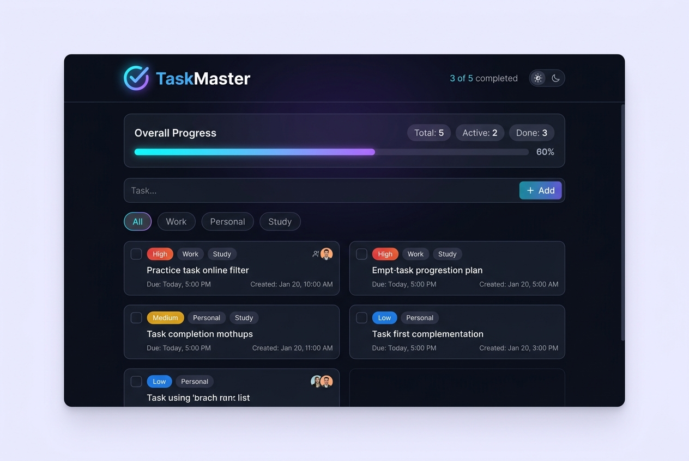

The Problem & Solution
Modern productivity apps are frequently bloated with compulsory cloud accounts, invasive trackers, slow synchronization latency, and paywalls for basic categorization. Users lose focus and struggle to maintain quick, confidential daily checklists without friction.
Client-First Reactive State Persistence
TaskMaster solves this with a zero-latency, privacy-first offline architecture. Leveraging the
browser's synchronous localStorage API alongside a clean reactive event bus,
tasks are stored, categorized, and queried entirely on-device without external server roundtrips,
delivering instantaneous responsiveness.

Task Ecosystem & Category Filters

Dynamic Category Filtering
Filter active items by All, Work, Personal, and Completed tabs with live counter badges and zero layout reflow.
Real-Time Progress Telemetry
Visual completion telemetry with animated progress bar calculations updating optimistically on every interaction.
Keyboard Accessibility & Shortcuts
Full keyboard navigation support, instant Enter-to-create workflows, and accessibility tags for screen readers.
Instantaneous DOM Reordering
Smooth list mutations powered by DocumentFragment batching that avoid full page repaints.
Zero-Latency LocalStorage Engine
Reactive State Architecture & Code
// Reactive Client-Side State Controller
class TaskController {
constructor(key = 'taskmaster_v1') {
this.key = key;
this.tasks = JSON.parse(localStorage.getItem(key)) || [];
}
addTask(title, category = 'Work') {
const item = {
id: crypto.randomUUID(),
title: title.trim(),
category: category,
completed: false,
timestamp: Date.now()
};
this.tasks.unshift(item);
this.persist();
return item;
}
persist() {
localStorage.setItem(this.key, JSON.stringify(this.tasks));
}
}Single Source of Truth
State is centralized within an immutable in-memory array that serializes atomically to
localStorage on mutations.
Event Delegation Pipeline
A single root listener on the task container handles checkbox toggles, edits, and deletions, maintaining minimal memory footprint.
Zero Latency & Privacy
Zero tracking beacons or third-party cookies. All user data stays exclusively within the user's device sandbox.
Key Challenges & Solutions
JSON Parsing Failures & Corrupted State
Browsers can encounter syntax errors if storage strings are improperly truncated or modified by browser extensions.
Repaint Churn on Rapid Category Switching
Filtering through dozens of DOM cards in real time can induce layout thrashing and stutter on lower-end mobile devices.
DocumentFragment
batching to ensure zero layout reflows.